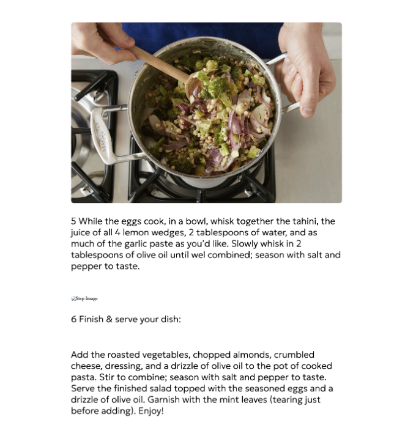

The Overview
I had to create a recipe website using PHP and mySQL databases. Throughout the development of this site, I used previous knowledge of HTML and CSS to create static functional, pleasing designs for a main page and recipe details page. I then implemented PHP code and data from mySQL to format my recipes and make my page dynamic. I finished off by combining my main and recipe pages, making them work with each other. The process was tedious, but I learned valuable knowledge of how PHP and databases work, and refined my HTML/CSS skills in the process.
Context and Challenge
This course, IDM 232, is an expansion on previous scripting classes for digital media. I had to complete a final deliverable project. The idea of this project was to create a recipe website with the implementation of PHP code. I had the quarter to work on the project, about 11 weeks not including holidays or breaks. The purpose of this project was to help introduce me to the basics of PHP, and to learn how to merge my web development knowledge from previous courses with PHP.
The biggest challenge of this project was implementing PHP and a mySQL database. In previous courses, I had learned how to code responsive, multi-paged websites using HTML and CSS. Overtime, I learned how to write and implement Javascript into my programs. However, in this course I could not do any hardcoding for recipe data. I needed to figure out how to take 37 recipes from a mySQL database, and extract its data into my recipe site using PHP code. This project was an introduction into PHP and databases. Although I was not learning how to become an expert on the subject, this project was meant to help familiarize me with PHPs basic concepts. Up until this point, I had only learned how to manually code input data, which was very time consuming. Completing this project aimed to teach me how to solve the problem of managing large amounts of data.
The final goal to complete this project was to fully integrate a PHP database into a responsive, multi-page recipe website. To complete this final goal, I worked by myself and completed weekly/bi-weekly smaller goals throughout the 11 week quarter. I started by slowly building my static HTML/CSS menu and recipe detail pages. These assignments were mainly applying knowledge from previous courses, and they served as a refresher and building blocks for my site. In these stages, I had to figure out my site name, layout, branding, and make sure the static site was functional (without PHP.) After the initial set up stages, I applied basic PHP knowledge I had learned in the opening weeks of this course to my pages. In order to incorporate PHP code into my static pages, I had to learn how to echo code from HTML to PHP, set up a local server, and connect that local server to a mySQL database. Once that was set up, I then had to figure out how to extract data from mySQL to display data on my PHP web page. Finally, I had to learn how to make my site and database public, by uploading it online and configuring server rules/code. Once everything was working, I had to merge my main page and recipe details page together. While doing this, I also needed to make my search, filters, clicks, and back buttons fully functional so the two pages were accessible to each other. Finally, I planned to polish up any errors, and complete my project.
Process and Insight
I got off to a slow start. It had been a bit since I had coded my last HTML/CSS webpage, and I was in need of some refreshing. I ended up working on my static recipe page longer than I thought I would, and I had some problems with my initial design. I thought there were positive aspects to my initial layout. I created a custom wordmark and logo for my site, which I named “Savor and Sizzle.” The wordmark was a slick, hand-drawn font with flames and a warm gradient to evoke the “Sizzle” aspect of the title. My navigation bar at the top had a clean layout with my simplified logo floating left and my filters floating right. When the page shrunk, the filters disappeared, and I created a hamburger menu that would display the filters on smaller devices. However, I noticed some problems with the bottom of the page. My banner image was pixelated and not very flattering when it was shrunk down to mobile size. Additionally, I had images missing from my “Featured Recipes” section. For now, I was supposed to choose 9 recipes to highlight on the main page, and I must have not uploaded certain files onto Dreamhost when I submitted. My submission link was also broken, which I had to configure through Dreamhost.
After my homepage was created, I made my static recipe details page. This page was meant for when a recipe was clicked upon, and it would show the details of the dish (title, time, ingredients, etc.) and the steps to create it with pictures. I kept the same branding and navigation bar as my main page, but instead swapped the content with a responsive details page. This page had a hero image, title, subtitle, details, ingredients steps and images, and recipe steps and images. This design had much less problems than my main page, I was refreshed with my knowledge of HTML and CSS and had learned from previous mistakes. I focused a ton on the layout, and tried to make it so it would encapsulate all of the information in an appealing manner. The few mistakes I made were not bulleting my ingredients list, and not putting a visual indicator between steps to separate them.
Next, I made the main menu page dynamic using PHP. I started by using MAMP to host a local server with my code and mySQL database that contained the data for all 37 recipes. Then, I echoed my HTML code through PHP, and created a loop that would display all 37 recipes on my main page. I also went in and fixed a few design errors that I had previously had with this page, such as logo height, removing the banner, and replacing broken images. The mySQL database connected with my PHP code online, and was fully functional. However, the main mistake I made came from my design. I had trouble echoing my multi-column layout into the PHP version of my website, and now all of my recipes appeared in single-column.
After my dynamic main page was created, I moved on to creating my dynamic recipe details page. At first, everything was going well. My design errors were corrected, such as removing the filters from the navigation bar since they would not be accessible in the details page. I had my PHP and database working with each other, and I had echoed the HTML into PHP correctly. My text data was being correctly extracted and input into my site using loops, concatenation, and if statements. Unfortunately, most of my images on my public version of my site were still broken, and even out of order on most recipes. I went into my public mySQL database, and discovered tons of errors with how the images were broken up. Images are separated with the “*” character, and I found recipes missing them, which caused the step images to be out of order. Many of these images were also out of order, so I manually went into the database to fix them by reordering the image file names and “*” characters. Additionally, I found that I was missing a lot of image files that I had forgotten to upload, which explains some of my earlier problems.
After troubleshooting my issues, I reached the final stage: assembly. I merged my main page and recipe details page into one folder, and began making them accessible to each other by clicking on a recipe from main to take you to its details, and using the back button in details as a way back to the main page. I also made my search and filters usable with PHP code. When you search something, that value gets stored as a variable and passed through a search loop. If any strings in a recipe subtitle or title match the variable, then the recipes that contain that search string are returned. Additionally, the filters at the top contain data for the protein of a food. If you click on beef, then all recipes with the id tag “beef” will be returned, and so on. Besides these major functionality changes, I also made small design improvements. In the recipe details, I added bullet points to the ingredients list and an hr rule that visually separates recipe steps. In the main page, I created a responsive multi-column layout for recipes, fixed broken image files, and changed the hero image banner to a more fitting patterned background that acted as a background that would let the logo and search bar stand out.
Final Project
The Solution

The Results
I think that this project was a success. It definitely was not easy, as there was a ton of tedious work to complete with HTML/CSS styling, and the disorganized mySQL database that I had to go through. This was definitely my toughest project yet, but I think that I rose to the challenge. I put a lot of effort into making a responsive and functional page, and took feedback to make the necessary adjustments I needed to as time went on. Looking, I definitely would have liked to start this project earlier. The extra time would have allowed me to add more details and styling to the page. However, I am beyond proud of myself, and am grateful that I have learned so much about PHP and how to work with databases.